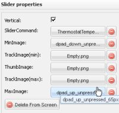

Hi all,
can somebody give me a hint how I can create a custom command for setting a temperature in a KNX command instead of using a slider.
Actually I have created a command with the KNX Command "TEMP" and type 9.001. By using a slider everything works fine. But how can I create my own command? For example I want to create a button which sets the temperature to 16 deg. I tried a KNX command "TEMP 16" but this does not work.
Further on does somebody has a rule example how to use a slider with decimal values instead of integer only?
Marc
{kind=link}
|
 You can keep the slider. If you only define the Max and Min images as arrows, you end up with increase/decrease buttons. Click on the image to get a larger picture. |
|
Hi Pieter, thanks for that, but this does not solve my problem. I want to send a value like "TEMP 16.5" to the KNX Bus but I have no clue how the syntax for this looks like. Marc |
|
Looking at the code, I see that what you're trying to do has not been implemented for the TEMP command. Created ORCJAVA-419 to track this. |
|
Eric, sorry for OffTopic, but you definately know the answer. Please help. rule "Button pressed" no-loop // Button will be pressed all the time without this structure when Event (source == "SensButtonsOnOff") // Check if Water button was pressed then double dMinBoLeft = $VolData.getVolume() * 1.0; // Funny conversion from Integer to Double by * 0.1 dMinBoLeft = dMinBoLeft / 60; Integer iTimeBoLeft = dMinBoLeft.intValue(); // <= Error here: look to bottom end Error is the following:
ERROR 2014-01-06 10:47:02,636 : Rule Compilation error Cannot invoke intValue() on the primitive type double
I don't see any kind of error in such string: Integer iTimeBoLeft = dMinBoLeft.intValue(); |
|
Don't assume I know the answer to all questions posted on the forums! But yet, in this case I guess it's a Java issue, where you're trying to call a method on a primitive type (as indicated by compiler). Try Integer iTimeBoLeft = (int)dMinBoLeft; |
|
Thank you. It helped! Don't assume I know the answer to all questions posted on the forums! Thank you again, Eric. |
|
Glad it helped and no worries, not mad at all. |
|
Hello Eric, coming back to the original question. Is this something which can be implemented in the next release? BTW, any idea when the next official release will be published. Are there any "nightly builds" available? Marc |
|
I don't know when any of the core team members will have time to look at this, not in the coming weeks I would say. Maybe someone in the community can have a go at it before that. There are no nightly builds, sometimes specific binaries are posted in forum threads that do implement a fix or new feature, otherwise you'll have to build from the sources. |
|
Hello Eric, and where do I find the sources? Marc |
|
It's in subversion. You can use this branch : Controller_2_0_2. Look at the GroupValueWrite.java class and see how parsing is done for e.g. DIM |
{kind=link}